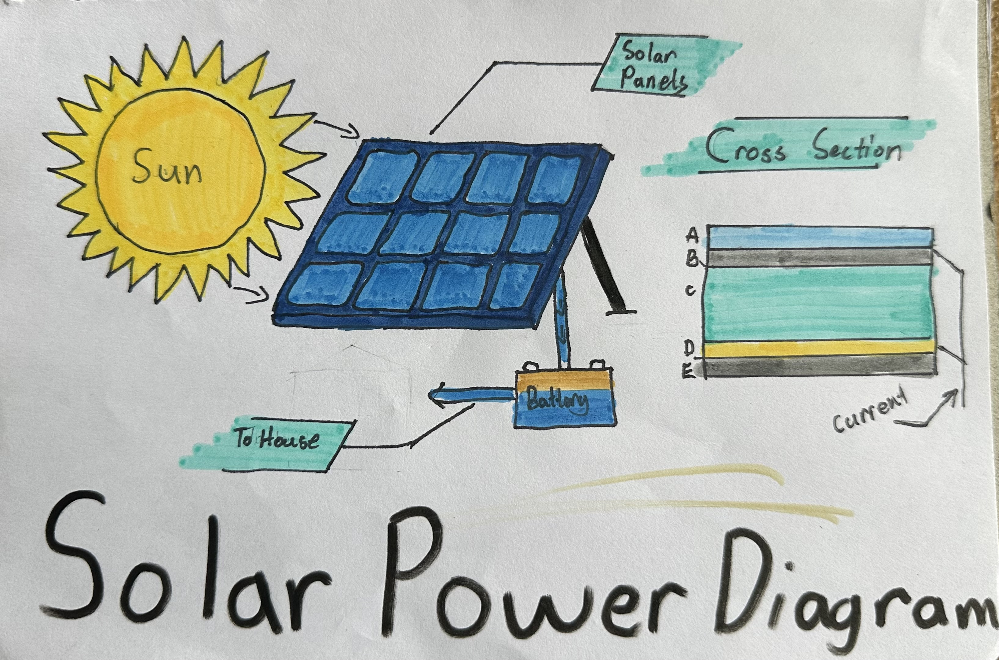

Solar power is a form of renewable energy that harnesses the energy from the sun to generate electricity. Solar panels, also known as photovoltaic (PV) panels, convert sunlight into electrical energy through the photovoltaic effect.
| Advantages | Disadvantages |
|---|---|
| Renewable and sustainable: Solar power relies on the sun, which is a virtually inexhaustible energy source. | Intermittent energy source: Solar power generation depends on sunlight, which is not available at all times. |
| Low greenhouse gas emissions: Solar power generates electricity without producing harmful emissions. | High initial costs: The upfront investment for solar panel installation can be significant. |
| Cost-effective long term: Once installed, solar panels have low maintenance costs and can provide electricity for decades. | Land use and space requirements: Large-scale solar installations require significant land area. |
| Solar farms can provide local economic development and job opportunities. | Dependence on weather conditions: Cloudy or rainy days can reduce solar power generation. |
| Supports grid stability: Solar power can be integrated with other renewable sources to balance energy supply. | Energy storage challenges: Storing solar energy for use during non-sunny periods requires batteries, which can be costly. |

The way solar power works is through the photovoltaic effect. When sunlight hits the crystalline semiconductor material in the middle of the solar panel (c), the energy knocks electrons loose, creating an electric current. The layers of sylicon, The N-layer and the P-layer (B and D), surrounding the semiconductor creates an electric field that makes the electrons flow one way, generating DC electricity. Then, a solar inverter converts the DC electricity to AC electricity for use in homes and businesses.
In the diagram above, the A layer represents the antireflective coating. And the E layer represents the reflective coating at the bottom of the solar panel.
The anti-reflective layer at the top stops sunlight from bouncing away so more enters the solar cells, while the reflective layer at the back bounces unabsorbed light back through the silicon for a second chance at generating electricity and helps reduce heat buildup.